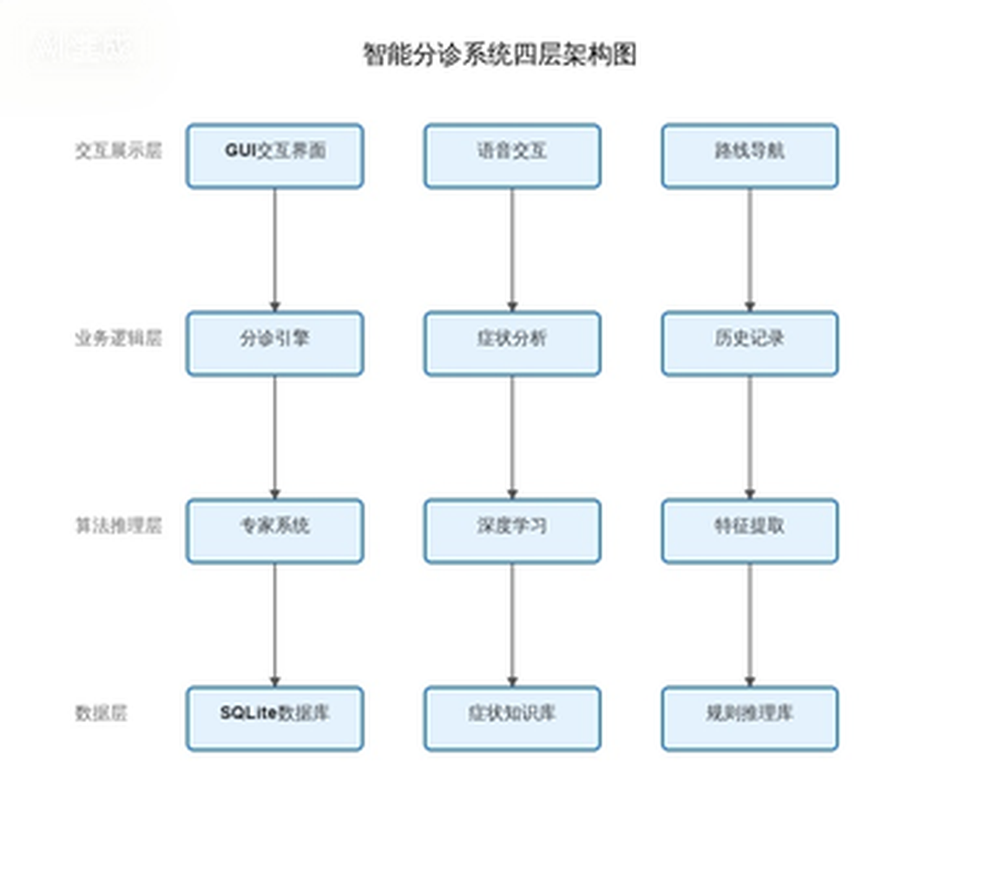
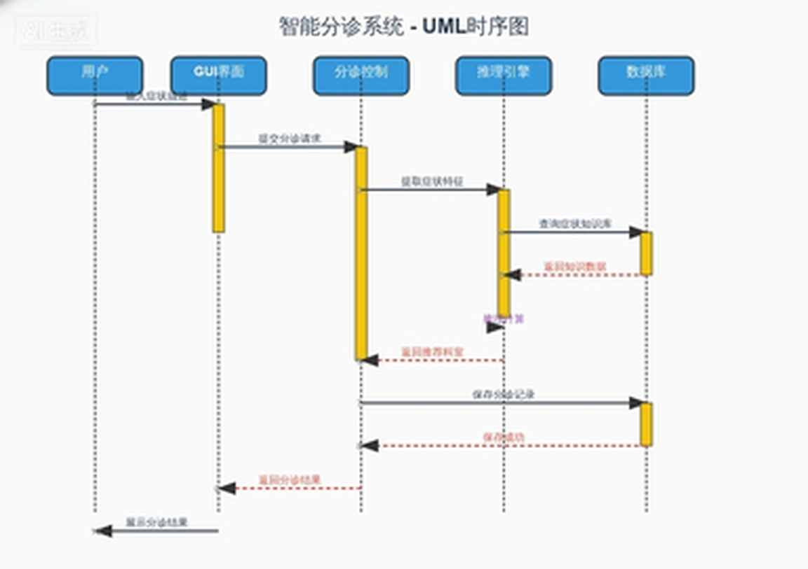
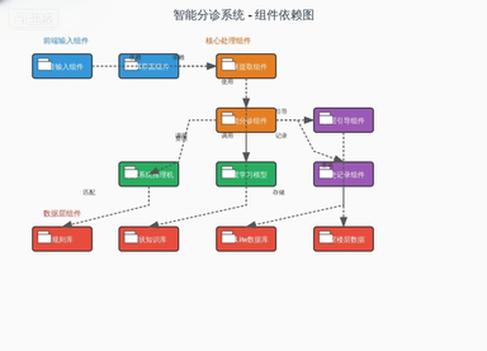
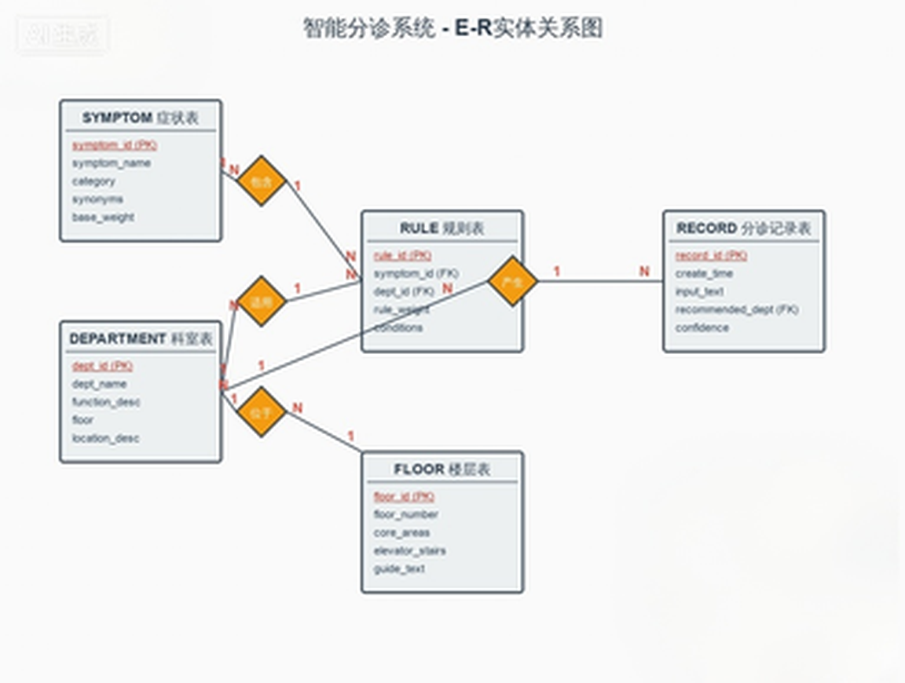

文档版本： V1.0
修订日期： 2026-05-26
产品名称： 智能导医系统
撰写人： 课程设计小组
当前医院就诊流程繁琐，人工导诊人员工作压力大，患者常因不熟悉科室布局、不清楚症状对应科室，出现分诊错误、就诊延误等问题。据统计，85%的首诊患者不知该挂何科室，平均候诊时间达1.8小时。大型医院楼层多、科室分散，院内导航困难，信息不对称问题突出。
在"健康中国2030"战略推进与老龄化加剧的背景下，智慧医疗市场规模预计在2025年达300亿元，年复合增长率35%。《互联网诊疗管理办法》等政策的出台，为智能导医类产品提供了广阔的发展空间。
面向医院门诊场景的 AI 智能导医原型系统，基于符号主义专家系统规则推理 + 深度学习技术混合架构，为患者提供语音问诊、症状智能识别、自动分诊、科室楼层导航一站式服务，替代/辅助人工导诊，简化就诊流程，提升医院门诊服务效率。
| 目标维度 | 短期目标 | 长期目标 |
|---|---|---|
| 功能范围 | 支持18种常见症状、10个科室智能分诊 | 扩展症状库至50+种，支持多轮对话式问诊 |
| 分诊准确率 | ≥ 90% | ≥ 95% |
| 导航准确率 | 楼层引导路线100%准确 | 支持AR实景导航 |
| 交互方式 | 语音输入、文字输入双模式 | 增加人脸识别、多语言支持 |
| 稳定性 | 连续运行30分钟无崩溃 | 对接医院HIS挂号系统，实现分诊-挂号一体化 |
患者端价值：
- 快速分诊：AI自动匹配科室，避免因医学知识不足导致的分诊错误
- 精准导航：明确科室位置与就诊路线，减少寻路时间
- 便捷操作：支持语音输入，降低中老年用户操作门槛
- 减少等待：自助导诊无需排队，提升就诊体验
医院端价值：
- 降本增效：减轻人工导诊人员工作压力，降低人力成本
- 提升流转：优化门诊就诊流程，提升患者流转效率
- 服务升级：智能化服务提升医院整体形象与患者满意度
教学价值：
- 验证经典AI（专家系统）与现代深度学习技术在医疗场景的融合应用
- 通过完整产品开发流程，提升团队工程实践与协作能力
| 功能模块 | 功能描述 | 优先级 | 备注 |
|---|---|---|---|
| 语音问诊模块 | 支持语音输入症状，自动转换为文字 | 高 | 调用语音识别API实现 |
| 文字输入模块 | 支持键盘文字输入症状描述 | 高 | 语音识别失败时的备用方案 |
| 症状提取模块 | 从输入文本中自动识别核心症状与伴随症状 | 高 | 基于规则匹配 + 文本分类 |
| 智能分诊模块 | 基于症状推理给出最优科室建议 | 高 | 专家系统规则库 + 正向推理机 |
| 楼层引导模块 | 生成从导诊台到目标科室的详细文字路线 | 高 | 基于科室楼层数据库 |
| 多症状综合推理 | 支持同时输入多种症状进行加权分诊 | 高 | 多规则加权计算 |
| 模糊症状追问 | 症状信息不全时主动提示补充 | 中 | 提升分诊准确率 |
| 分诊历史记录 | 查看近期分诊记录与就诊建议 | 中 | 便于复诊参考 |
| 异常场景处理 | 识别失败/无匹配症状时给出友好提示 | 中 | 引导至人工导诊 |
| 科室信息查询 | 查看各科室简介、出诊医生信息 | 低 | 扩展功能 |
1. 语音问诊功能
用户长按语音按钮进行说话，松开按钮后自动调用语音识别API将语音转换为文字。
操作流程：
1. 用户进入首页，点击并长按"按住说话"按钮
2. 用户口述症状描述（如"我发烧咳嗽，喉咙也痛"）
3. 松开按钮，系统调用语音识别接口进行识别
4. 识别成功后，在输入框显示识别出的文字
5. 用户可点击"确认"提交，或点击"重录"重新输入
异常场景处理：
- 识别失败：提示"抱歉，未听清您的描述，请重新说话或使用文字输入"
- 网络异常：提示"网络连接异常，请检查网络后重试，或切换至文字输入"
2. 症状提取功能
从用户输入的自然语言文本中，基于症状库进行分词匹配，提取核心症状和伴随症状。
操作流程：
1. 接收用户输入的文本（语音转文字或直接文字输入）
2. 进行中文分词处理，提取关键词
3. 与系统症状库进行模糊匹配，识别有效症状
4. 输出结构化的症状列表（核心症状 + 伴随症状）
5. 在界面上高亮显示已识别的症状
异常场景处理：
- 无有效症状：提示"未识别到有效症状，请更详细地描述您的不适，例如：发烧、咳嗽"
- 症状模糊：提示"您描述的症状较模糊，是否有发烧、疼痛等具体感受？"
3. 智能分诊功能
基于IF-THEN专家系统规则库，采用正向推理机制，根据提取的症状进行规则匹配，通过加权计算得出最优科室建议。
操作流程：
1. 接收症状提取模块输出的症状列表
2. 加载专家系统规则库，进行规则匹配
3. 对匹配到的多条规则进行置信度加权计算
4. 按置信度排序，输出TOP1科室建议
5. 显示分诊结果、科室简介、分诊依据
异常场景处理：
- 多科室冲突：显示"根据您的症状，建议优先就诊【XX科室】，如伴有明显XX症状也可选择【YY科室】"
- 无匹配规则：提示"您的症状较为特殊，建议前往1楼导诊台咨询人工导诊"
4. 楼层引导功能
根据分诊结果中的科室信息，查询科室楼层数据库，结合楼层布局数据，生成标准化的文字引导路线。
操作流程：
1. 用户在分诊结果页点击"查看路线"按钮
2. 系统查询目标科室的楼层与位置信息
3. 结合楼层布局（电梯、楼梯位置），生成引导路线
4. 以清晰的文字展示从1楼导诊台到目标科室的完整路线
5. 显示科室所在楼层、具体位置、标志性参照物
| 性能指标 | 要求标准 | 备注 |
|---|---|---|
| 单次分诊响应时间 | ≤ 3秒 | 从提交症状到显示分诊结果 |
| 语音识别响应时间 | ≤ 2秒 | 从松开按钮到显示文字 |
| 路线生成响应时间 | ≤ 1秒 | 点击查看路线到显示结果 |
| 系统稳定性 | 连续运行30分钟无崩溃 | 满足课程设计演示要求 |
| 并发支持 | 支持单人连续操作无卡顿 | 原型系统单用户使用 |
| 内存占用 | ≤ 500MB | 确保在普通PC上流畅运行 |
| 兼容维度 | 要求标准 |
|---|---|
| 操作系统 | Windows 10及以上版本 |
| 运行环境 | Python 3.8+，JDK 1.8+ |
| 屏幕分辨率 | 1920×1080及以上，支持自适应缩放 |
| 硬件要求 | 普通PC即可，需配备麦克风（语音输入用） |
| 网络要求 | 语音识别需联网，基础分诊功能可离线运行 |
| 安全维度 | 要求标准 |
|---|---|
| 用户隐私 | 不存储患者姓名、身份证号等敏感隐私数据 |
| 数据存储 | 分诊历史记录仅本地缓存，不上传云端 |
| 离线能力 | 基础专家系统分诊可离线使用，不依赖网络 |
| 数据备份 | 知识库、规则库定期备份，防止数据丢失 |
| 访问控制 | 管理员配置功能需密码验证，防止误操作 |
本项目采用 "专家系统 + 深度学习"混合架构，兼顾经典AI方法与现代深度学习技术，既降低开发难度，又提升系统智能化水平。架构设计遵循以下原则：
系统采用四层架构设计，从下到上依次为：

图1：系统四层架构（交互展示层 → 业务逻辑层 → 算法推理层 → 数据层）
数据层：
- SQLite数据库：存储科室信息、楼层布局、分诊历史记录
- 症状知识库：包含18种核心症状及其属性定义
- 规则库：IF-THEN格式的医疗分诊规则集
- 科室楼层数据：10个科室的位置信息与楼层分布
算法推理层：
- 专家系统推理机：基于正向推理机制，实现规则匹配与加权计算
- 深度学习模型：症状文本分类模型，提升模糊症状识别准确率
- 症状提取引擎：基于分词与模糊匹配的症状识别模块
- 语音转文本引擎：调用第三方语音识别API（如百度语音、讯飞）
业务逻辑层：
- 分诊流程控制：协调各模块完成"输入→提取→推理→输出"全流程
- 症状管理模块：管理症状的生命周期与状态
- 历史记录模块：分诊记录的存储、查询与展示
- 异常处理模块：无匹配、识别失败等异常场景的统一处理
交互展示层：
- GUI界面模块：基于PyQt/Tkinter的桌面应用程序界面
- 语音交互模块：语音按钮交互与识别状态管理
- 路线展示模块：文字路线生成与可视化展示

图2：系统数据流转时序图（展示用户、界面与各模块间的交互顺序）

图3：系统功能模块划分（展示各模块的职责与关联关系）
职责： 提供语音与文字两种输入方式，将用户的症状描述转换为系统可处理的文本。
核心组件：
- 语音采集器：调用麦克风采集音频数据
- 语音识别代理：封装第三方ASR API调用
- 文字输入框：支持键盘输入的备用方案
- 快捷症状按钮：发烧、咳嗽、头痛等常见症状一键输入
输入： 音频流 / 键盘文字
输出： 结构化文本（症状描述）
职责： 从自然语言文本中识别并提取有效症状关键词。
核心组件：
- 中文分词器：jieba分词处理
- 症状匹配器：与症状库进行精确/模糊匹配
- 权重计算器：计算症状的置信度与优先级
- 追问生成器：症状信息不足时生成补充问题
输入： 自然语言文本
输出： 症状列表 [{症状名, 类型, 置信度}]
匹配算法：
1. 对输入文本进行jieba分词
2. 对每个词项，在症状库中进行：
a. 精确匹配 → 置信度 = 1.0
b. 模糊匹配（编辑距离≤2）→ 置信度 = 0.8
c. 同义词匹配 → 置信度 = 0.9
3. 过滤置信度 < 0.5 的匹配项
4. 按置信度降序排列，取TOP-N
5. 若无有效匹配，触发追问逻辑
职责： 基于提取的症状，通过专家系统推理得出最优科室建议。
核心组件：
- 规则加载器：加载IF-THEN规则库
- 正向推理机：从症状出发匹配规则
- 加权计算器：多规则冲突时的加权投票
- 结果排序器：按置信度排序输出
输入： 症状列表
输出： 分诊结果 [{科室, 置信度, 分诊依据, 备选科室}]
推理算法：
1. 初始化工作内存（加载症状列表）
2. 遍历规则库，匹配条件包含当前症状的规则
3. 对匹配的规则：
a. 单症状规则：置信度 = 规则基础权重
b. 多症状规则：置信度 = 规则基础权重 × 症状匹配数 / 规则要求症状数
4. 按科室汇总所有匹配规则的加权置信度
5. 取置信度最高的科室作为主推荐
6. 若TOP1与TOP2置信度差 < 0.1，输出备选建议
职责： 根据分诊结果生成从导诊台到目标科室的文字导航路线。
核心组件：
- 科室定位器：查询科室楼层与位置
- 路线生成器：基于楼层数据生成引导文本
- 参照物提示器：提供标志性建筑辅助定位
输入： 目标科室ID
输出： 文字导航路线 + 楼层位置信息
路线模板示例：
【目标科室】呼吸内科
【所在位置】3楼东侧，靠近电梯口
【引导路线】
1. 从1楼大厅导诊台出发，前往大厅西侧电梯
2. 乘坐电梯至3楼
3. 出电梯后右转直行
4. 呼吸内科位于东侧，靠近电梯口，紧邻护士站
职责： 管理用户的分诊历史，支持查询与回顾。
核心组件：
- 记录存储器：将分诊结果持久化到SQLite
- 记录查询器：按时间倒序查询历史记录
- 详情展示器：展示单条记录的完整信息
数据项： 时间戳、输入症状、推荐科室、置信度、是否查看路线
职责： 提供知识库维护、规则管理、系统配置等管理功能。
核心组件：
- 知识库编辑器：增删改症状与科室数据
- 规则管理器：编辑IF-THEN规则
- 系统配置器：设置API密钥、阈值参数等
- 数据备份器：知识库与规则库的导出/导入
| 技术领域 | 选型方案 | 版本要求 | 选型理由 |
|---|---|---|---|
| 编程语言 | Python | 3.8+ | AI生态完善，专家系统与深度学习库丰富 |
| GUI框架 | PyQt5 / Tkinter | 5.15+ | 跨平台、组件丰富、学习曲线适中 |
| 数据库 | SQLite | 3.35+ | 轻量级、零配置、内置于Python标准库 |
| 语音识别 | 百度语音API / 讯飞API | - | 准确率高、中文支持好、有免费额度 |
| 分词工具 | jieba | 0.42+ | 中文分词首选，支持自定义词典 |
| 深度学习 | scikit-learn / PyTorch | 1.0+ | 适合文本分类任务，与专家系统互补 |
PyQt5
- 优势：组件丰富（按钮、输入框、列表、对话框等完善），支持自定义样式，文档齐全
- 适用场景：桌面级GUI应用，需要复杂界面交互的场景
- 核心组件：QMainWindow（主窗口）、QPushButton（按钮）、QTextEdit（文本输入）、QListWidget（列表展示）
备选：Tkinter
- 优势：Python内置库，无需额外安装，轻量级
- 适用场景：简单界面、快速原型开发
- 决策：课程设计演示阶段使用PyQt5，确保界面美观度
专家系统引擎（自研）
- 知识表示：基于产生式规则（IF-THEN）
- 推理机制：正向推理（数据驱动）
- 冲突消解：加权投票机制，置信度优先
- 实现方式：Python字典存储规则，自定义推理机类
症状文本分类（深度学习辅助）
- 模型选择：朴素贝叶斯 / SVM / 浅层神经网络
- 特征提取：TF-IDF + 词袋模型
- 训练数据：基于18种症状的标注语料（可扩展）
- 作用：辅助专家系统，提升模糊症状识别率
语音识别（第三方API）
- 候选方案：百度语音识别API、讯飞开放平台
- 调用方式：RESTful API，上传音频文件获取识别结果
- 容错设计：识别失败自动切换至文字输入
SQLite
- 选型理由：
- 零配置、单文件存储，便于课程设计交付与部署
- 内置于Python标准库（sqlite3模块），无需额外安装
- 支持标准SQL语法，满足本项目数据管理需求
- 性能足以支撑单用户原型系统
guide_system.db（单文件，可随项目一起分发）| AI技术 | 具体实现 | 作用 |
|---|---|---|
| 专家系统 | 自研规则推理引擎 | 核心分诊逻辑，可解释性强 |
| 自然语言处理 | jieba分词 + 模糊匹配 | 症状关键词提取 |
| 机器学习 | scikit-learn文本分类 | 辅助症状识别，提升准确率 |
| 语音识别 | 第三方ASR API | 语音输入转文字 |

图4：数据库E-R图（展示实体、属性及实体间的关联关系）
| 字段名 | 类型 | 约束 | 说明 |
|---|---|---|---|
| symptom_id | INTEGER | PRIMARY KEY | 症状唯一标识 |
| symptom_name | VARCHAR(50) | NOT NULL | 症状名称 |
| category | VARCHAR(30) | NOT NULL | 症状分类（呼吸类/消化类/神经类等） |
| synonyms | VARCHAR(200) | 同义词，逗号分隔 | |
| base_weight | FLOAT | DEFAULT 1.0 | 症状基础权重 |
示例数据：
| symptom_id | symptom_name | category | synonyms | base_weight |
|---|---|---|---|---|
| 1 | 发烧 | 呼吸类 | 发热、高热、低烧 | 1.0 |
| 2 | 咳嗽 | 呼吸类 | 咳、干咳、咳痰 | 1.0 |
| 3 | 喉咙痛 | 呼吸类 | 咽痛、嗓子痛 | 0.9 |
| 4 | 腹痛 | 消化类 | 肚子疼、胃痛 | 1.0 |
| 5 | 头痛 | 神经类 | 头疼、偏头痛 | 1.0 |
| 6 | 关节痛 | 骨科类 | 关节疼、关节疼痛 | 1.0 |
| 7 | 高血压 | 心血管类 | 血压高 | 1.0 |
| 8 | 皮肤瘙痒 | 皮肤类 | 皮疹、皮肤红肿 | 0.9 |
| 字段名 | 类型 | 约束 | 说明 |
|---|---|---|---|
| dept_id | INTEGER | PRIMARY KEY | 科室唯一标识 |
| dept_name | VARCHAR(50) | NOT NULL | 科室名称 |
| function_desc | VARCHAR(200) | 核心职能描述 | |
| floor | INTEGER | NOT NULL | 所在楼层 |
| location_desc | VARCHAR(200) | NOT NULL | 位置描述 |
示例数据：
| dept_id | dept_name | function_desc | floor | location_desc |
|---|---|---|---|---|
| 1 | 呼吸内科 | 诊治发烧、咳嗽、胸闷等呼吸道疾病 | 3 | 3楼东侧，靠近电梯口 |
| 2 | 消化内科 | 诊治腹痛、胃痛、腹泻等消化疾病 | 3 | 3楼西侧，靠近楼梯口 |
| 3 | 神经内科 | 诊治头痛、头晕、失眠等神经疾病 | 4 | 4楼东侧，紧邻护士站 |
| 4 | 骨科 | 诊治关节痛、腰痛、骨折等骨科疾病 | 4 | 4楼西侧，靠近康复室 |
| 5 | 心血管内科 | 诊治高血压、心慌等心血管疾病 | 5 | 5楼东侧，靠近心电图室 |
| 6 | 皮肤科 | 诊治皮肤瘙痒、皮疹等皮肤疾病 | 5 | 5楼西侧，靠近药房 |
| 7 | 眼科 | 诊治视力模糊、眼干等眼部疾病 | 6 | 6楼东侧，靠近验光室 |
| 8 | 耳鼻喉科 | 诊治喉咙痛、声音嘶哑等耳鼻喉疾病 | 6 | 6楼西侧，靠近听力检测室 |
| 9 | 急诊科 | 处理昏迷、大出血等紧急情况 | 1 | 1楼大厅东侧，24小时接诊 |
| 10 | 导诊台 | 提供人工导诊、咨询服务 | 1 | 1楼大厅中央，入口处附近 |
| 字段名 | 类型 | 约束 | 说明 |
|---|---|---|---|
| rule_id | INTEGER | PRIMARY KEY | 规则唯一标识 |
| symptom_id | INTEGER | FOREIGN KEY | 关联症状 |
| dept_id | INTEGER | FOREIGN KEY | 关联科室 |
| rule_weight | FLOAT | DEFAULT 1.0 | 规则权重 |
| conditions | VARCHAR(500) | 规则条件描述 |
示例数据：
| rule_id | symptom_id | dept_id | rule_weight | conditions |
|---|---|---|---|---|
| 1 | 1 | 1 | 1.0 | 发烧 → 呼吸内科 |
| 2 | 2 | 1 | 1.0 | 咳嗽 → 呼吸内科 |
| 3 | 3 | 1 | 0.8 | 喉咙痛 → 呼吸内科（单纯） |
| 4 | 3 | 8 | 0.7 | 喉咙痛+声音嘶哑 → 耳鼻喉科 |
| 5 | 4 | 2 | 1.0 | 腹痛 → 消化内科 |
| 6 | 5 | 3 | 1.0 | 头痛 → 神经内科 |
| 7 | 6 | 4 | 1.0 | 关节痛 → 骨科 |
| 8 | 7 | 5 | 1.0 | 高血压 → 心血管内科 |
| 字段名 | 类型 | 约束 | 说明 |
|---|---|---|---|
| record_id | INTEGER | PRIMARY KEY AUTOINCREMENT | 记录唯一标识 |
| create_time | DATETIME | DEFAULT CURRENT_TIMESTAMP | 创建时间 |
| input_text | VARCHAR(500) | NOT NULL | 用户输入原文 |
| matched_symptoms | VARCHAR(200) | 匹配到的症状列表 | |
| recommended_dept | INTEGER | FOREIGN KEY | 推荐科室 |
| confidence | FLOAT | 分诊置信度 | |
| viewed_route | BOOLEAN | DEFAULT FALSE | 是否查看路线 |
| 字段名 | 类型 | 约束 | 说明 |
|---|---|---|---|
| floor_id | INTEGER | PRIMARY KEY | 楼层唯一标识 |
| floor_number | INTEGER | NOT NULL | 楼层编号 |
| core_areas | VARCHAR(200) | 核心区域/科室 | |
| elevator_stairs | VARCHAR(200) | 电梯/楼梯位置 | |
| guide_text | VARCHAR(500) | 引导说明文字 |
示例数据：
| floor_id | floor_number | core_areas | elevator_stairs | guide_text |
|---|---|---|---|---|
| 1 | 1 | 导诊台、急诊科、大厅 | 电梯2部（大厅西侧），楼梯1部（大厅东侧） | 从入口进入后，中央为导诊台... |
| 3 | 3 | 呼吸内科、消化内科 | 电梯2部（楼层西侧），楼梯1部（楼层东侧） | 出电梯后，东侧为呼吸内科... |
| 4 | 4 | 神经内科、骨科 | 电梯2部（楼层西侧），楼梯1部（楼层东侧） | 出电梯后，东侧为神经内科... |
| 5 | 5 | 心血管内科、皮肤科 | 电梯2部（楼层西侧），楼梯1部（楼层东侧） | 出电梯后，东侧为心血管内科... |
| 6 | 6 | 眼科、耳鼻喉科 | 电梯2部（楼层西侧），楼梯1部（楼层东侧） | 出电梯后，东侧为眼科... |
{"success": bool, "data": any, "message": str}# 语音识别接口
def recognize_speech(audio_data: bytes) -> dict:
"""
将音频数据转换为文字
Args:
audio_data: 音频二进制数据
Returns:
{
"success": True,
"data": {"text": "我发烧咳嗽好几天了"},
"message": "识别成功"
}
"""
# 文字输入接口
def input_text(text: str) -> dict:
"""
接收用户文字输入
Args:
text: 用户输入的症状描述
Returns:
{
"success": True,
"data": {"text": "我发烧咳嗽好几天了"},
"message": "输入成功"
}
"""
def extract_symptoms(text: str) -> dict:
"""
从文本中提取症状关键词
Args:
text: 用户输入的自然语言文本
Returns:
{
"success": True,
"data": {
"symptoms": [
{"name": "发烧", "type": "core", "confidence": 1.0},
{"name": "咳嗽", "type": "core", "confidence": 1.0}
],
"need_clarify": False,
"clarify_question": ""
},
"message": "提取成功"
}
"""
def diagnose(symptoms: list) -> dict:
"""
基于症状列表进行智能分诊
Args:
symptoms: 症状列表，格式为 [{"name": str, "confidence": float}]
Returns:
{
"success": True,
"data": {
"primary": {
"dept_id": 1,
"dept_name": "呼吸内科",
"confidence": 0.95,
"reason": "根据您描述的发烧、咳嗽症状，优先推荐呼吸内科"
},
"alternatives": [
{"dept_id": 8, "dept_name": "耳鼻喉科", "confidence": 0.3}
],
"matched_rules": [1, 2]
},
"message": "分诊完成"
}
"""
def generate_route(dept_id: int) -> dict:
"""
生成到目标科室的导航路线
Args:
dept_id: 目标科室ID
Returns:
{
"success": True,
"data": {
"dept_name": "呼吸内科",
"floor": 3,
"location": "3楼东侧，靠近电梯口",
"route": [
"从1楼大厅导诊台出发，前往大厅西侧电梯",
"乘坐电梯至3楼",
"出电梯后右转直行",
"呼吸内科位于东侧，靠近电梯口"
]
},
"message": "路线生成成功"
}
"""
def save_record(input_text: str, symptoms: list, result: dict) -> dict:
"""保存分诊记录"""
def get_records(limit: int = 10) -> dict:
"""查询历史记录，默认返回最近10条"""
def get_record_detail(record_id: int) -> dict:
"""获取单条记录详情"""
# 百度语音识别API调用示例
def call_baidu_asr(audio_data: bytes) -> str:
"""
调用百度语音识别API
Request:
POST https://vop.baidu.com/server_api
Content-Type: audio/pcm;rate=16000
Response:
{
"err_no": 0,
"err_msg": "success",
"result": ["我发烧咳嗽好几天了"]
}
"""
| 环境项 | 最低配置 | 推荐配置 |
|---|---|---|
| 操作系统 | Windows 10 | Windows 11 / macOS / Linux |
| CPU | Intel i3 / AMD Ryzen 3 | Intel i5 / AMD Ryzen 5 |
| 内存 | 4GB | 8GB |
| 存储 | 1GB可用空间 | 2GB可用空间 |
| 麦克风 | 普通麦克风 | 降噪麦克风 |
| 网络 | 可选（仅语音识别需联网） | 宽带网络 |
| 屏幕分辨率 | 1366×768 | 1920×1080 |
单机部署（课程设计演示方案）：
┌─────────────────────────────────────┐
│ 用户PC / 自助机 │
│ ┌───────────────────────────────┐ │
│ │ 智能导医系统应用程序 │ │
│ │ ┌─────────┐ ┌──────────┐ │ │
│ │ │ GUI界面 │ │ 算法引擎 │ │ │
│ │ │ (PyQt5) │ │(Python) │ │ │
│ │ └────┬────┘ └────┬─────┘ │ │
│ │ └──────────────┘ │ │
│ │ │ │ │
│ │ ┌──────┴──────┐ │ │
│ │ │ SQLite数据库 │ │ │
│ │ │ guide_system │ │ │
│ │ │ .db │ │ │
│ │ └─────────────┘ │ │
│ └───────────────────────────────┘ │
│ │ │
│ ┌──────┴──────┐ │
│ │ 麦克风输入 │ │
│ └─────────────┘ │
└─────────────────────────────────────┘
│
┌──────┴──────┐
│ 语音识别API │ (可选，需联网)
│ (百度/讯飞) │
└─────────────┘
部署步骤：
环境准备
# 安装Python 3.8+
python --version
# 创建虚拟环境
python -m venv venv
source venv/bin/activate # Linux/macOS
venv\Scripts\activate # Windows
依赖安装
pip install -r requirements.txt
requirements.txt 内容：
PyQt5==5.15.10
jieba==0.42.1
scikit-learn==1.3.0
requests==2.31.0
sqlite3 # 内置模块
数据库初始化
python init_db.py
配置文件设置
# 编辑 config.ini
[API]
baidu_app_id = your_app_id
baidu_api_key = your_api_key
baidu_secret_key = your_secret_key
启动系统
python main.py
guide_system/
├── main.py # 程序入口
├── config.ini # 配置文件
├── requirements.txt # 依赖清单
├── init_db.py # 数据库初始化脚本
├── guide_system.db # SQLite数据库文件
│
├── core/ # 核心算法层
│ ├── __init__.py
│ ├── expert_system.py # 专家系统推理机
│ ├── symptom_extractor.py # 症状提取引擎
│ ├── classifier.py # 深度学习分类器
│ └── speech_recognition.py # 语音识别代理
│
├── gui/ # 交互展示层
│ ├── __init__.py
│ ├── main_window.py # 主窗口
│ ├── input_panel.py # 输入面板
│ ├── result_panel.py # 结果展示面板
│ └── history_panel.py # 历史记录面板
│
├── models/ # 数据模型层
│ ├── __init__.py
│ ├── database.py # 数据库操作封装
│ ├── symptom.py # 症状数据模型
│ ├── department.py # 科室数据模型
│ └── record.py # 记录数据模型
│
├── data/ # 数据文件
│ ├── symptoms.json # 症状知识库
│ ├── rules.json # 分诊规则库
│ └── departments.json # 科室数据
│
└── utils/ # 工具模块
├── __init__.py
├── logger.py # 日志工具
└── helpers.py # 通用辅助函数
| 潜在风险 | 影响程度 | 应对措施 |
|---|---|---|
| 语音识别准确率低 | 中 | 1. 使用成熟大厂API，避免自研；2. 提供文字输入作为备用方案；3. 优化提示语，引导用户清晰描述症状 |
| 专家系统规则覆盖不足 | 中 | 1. 基于提供的18种核心症状构建完整规则；2. 设计兜底规则，未匹配时引导人工导诊；3. 预留规则扩展接口 |
| 多症状分诊冲突 | 低 | 1. 实现加权投票机制；2. 设计冲突消解策略；3. 冲突时给出备选建议而非单一结果 |
| 模块集成困难 | 中 | 1. 提前定义清晰的模块接口；2. 各模块输出标准化数据格式；3. 每周进行一次小型集成验证 |
| 开发进度滞后 | 高 | 1. 制定详细周计划，每日站会同步进度；2. 识别关键路径，优先保障核心功能；3. 预留1周缓冲时间 |
| 演示时出现BUG | 中 | 1. 提前进行多轮演示彩排；2. 准备备用演示环境与录屏；3. 设计异常情况下的应对话术 |
水平扩展方向：
规则库支持动态加载，新增症状只需添加对应规则
科室扩展
楼层数据与科室解耦，支持医院楼层布局变更
AI模型升级
支持模型热切换，便于对比不同算法效果
接口扩展
长期演进路线：
V1.0（当前） → V2.0 → V3.0
│ │ │
▼ ▼ ▼
18种症状 50+种症状 多轮对话
10个科室 全科室覆盖 个性化推荐
单机运行 网络部署 云端服务
文字导航 室内地图 AR实景导航
附录：团队分工
| 岗位 | 负责人 | 核心职责 |
|---|---|---|
| 项目组长 | 梁耀辉 | 统筹项目进度、协调各模块接口、组织团队讨论 |
| 需求与架构组 | 许欢、王志强、张若岩 | 需求调研、PRD撰写、系统架构设计 |
| 专家系统组 | 邱良梓 | 医疗知识库构建、规则库编写、推理机实现 |
| 深度学习/算法组 | 梁耀辉 | 语音识别集成、症状提取算法、文本分类实现 |
| 界面与交互组 | 马一鹏、张治文 | GUI界面开发、交互逻辑实现 |
| 测试与文档组 | 朱益暄 | 测试用例设计、功能测试、文档撰写 |
本文档为智能导医系统课程设计架构设计文档，基于符号主义专家系统与深度学习混合架构，旨在完成可演示的原型系统。